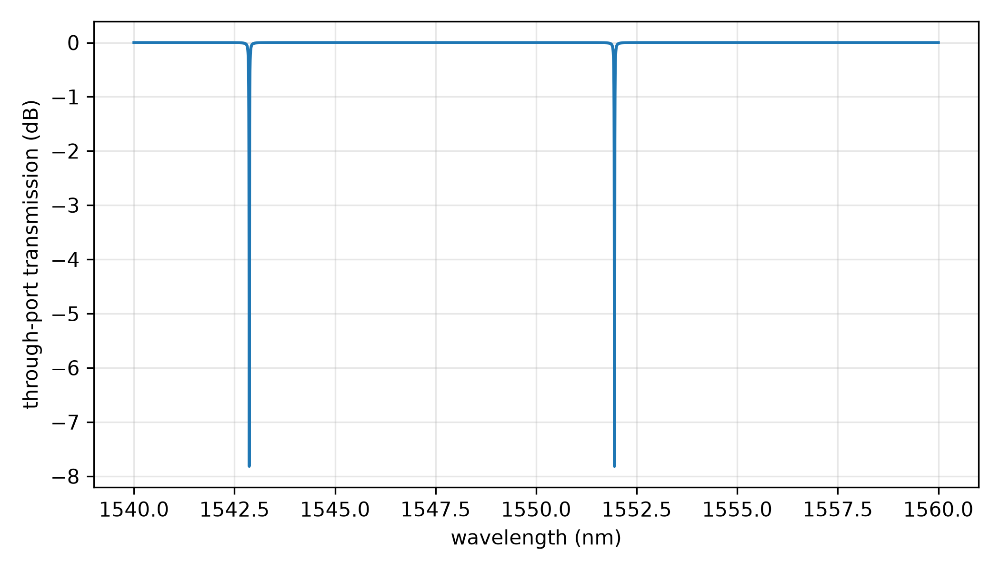
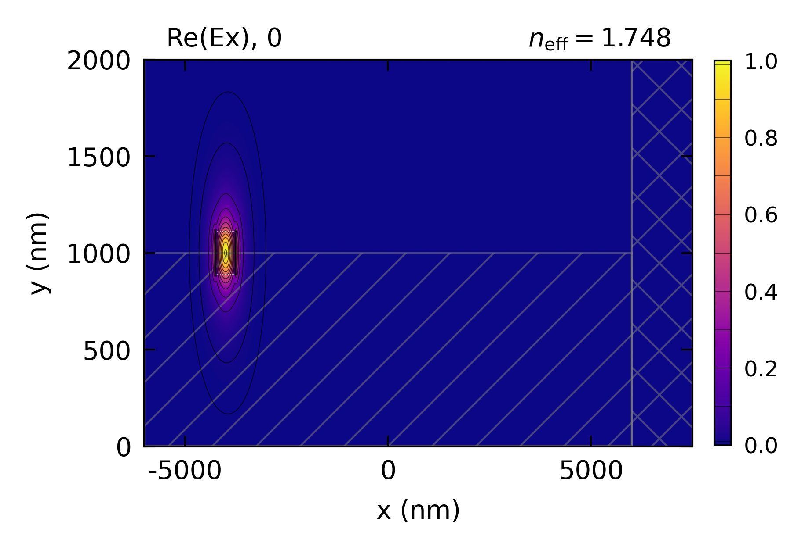

Ring Resonator Design
An all-pass ring resonator in silicon on insulator, designed from EMode2D mode solves: a 500 x 220 nm Si strip in SiO2 at 1550 nm, a ring of radius 10 um and a bus 200 nm from it. Every ingredient of the ring’s through-port spectrum comes from a solve: the guide’s effective index and group index, the bend mode and its loss, and the coupler’s even and odd supermodes. The spectrum is then the textbook all-pass formula, and the example prints its free spectral range (FSR), loaded Q and extinction.
The straight guide’s indices match published values for this guide. The bend is solved with
bend_radius and a PML on its outer wall, and at this radius the strip is confined so tightly that
its bend loss is negligible. The coupler’s even and odd supermodes are each found in their own
symmetry, and their index difference sets how much power crosses between the ring and the bus. The
sidewall scattering is an assumed typical value, since a mode solve has no roughness. The through-port
transmission is
with a the round-trip amplitude, t the bus transmission and phi the round-trip phase. The
FSR read from the spectrum agrees with lambda^2 / (n_g L). With the assumed coupling length the
ring is over coupled, and a shorter coupling region moves it toward critical coupling, which deepens
the resonance and raises the Q. A full design would solve the curved gap, for instance with
EME.
This code example is licensed under the BSD 3-Clause License.
import sys
import numpy as np
import emodeconnection as emc
from matplotlib import pyplot as plt
## Set simulation parameters: an SOI strip ring at 1550 nm
wavelength = 1550 # [nm] center wavelength
dx, dy = 5, 5 # [nm] resolution
w_core = 500 # [nm] silicon core width
h_core = 220 # [nm] silicon core height
window_height = 2000 # [nm]
radius = 10e3 # [nm] ring radius, at the center of the core
gap = 200 # [nm] bus to ring gap
coupler_length = 2000 # [nm] effective length of the coupling region
propagation_loss = 2 # [dB/cm] sidewall scattering, assumed (the mode solve has no roughness)
em = emc.EMode(emode_cmd=sys.argv[1:], simulation_name='ring_design')
## The straight guide: the 'TE' boundary condition folds the window by both
## of the guide's mirror planes
em.settings(
wavelength=wavelength, x_resolution=dx, y_resolution=dy,
window_width=3000, window_height=window_height,
num_modes=1, boundary_condition='TE', background_material='SiO2')
em.shape(name='core', material='Si', width=w_core, height=h_core,
position=[0, window_height/2])
em.FDM()
n_eff = float(np.real(np.asarray(em.get('effective_index'))[0]))
n_g = float(np.real(np.asarray(em.group_index())[0]))
## The bend: bend_radius is measured at the window's center, so the core sits
## x_off inside it. The window reaches past the radiation caustic,
## n_eff R / n_clad, about 7 um outside the core, and a PML on the outer wall
## absorbs what the bend radiates.
x_off = 4000 # [nm]
em.settings(
window_width=12000, bend_radius=radius + x_off,
pml_NSEW_bool=[0, 0, 1, 0], pml_thickness=[0, 0, 1500, 0], pml_kappa_max=1,
max_effective_index=(n_eff + 0.01)*radius/(radius + x_off))
em.shape(name='core', position=[-x_off, window_height/2])
em.FDM()
em.plot(component='Ex', window_display=True, file_name='ring_bend_Ex', file_type='png')
## The bend's effective index and group index are referenced to the window's
## center, so rescale them to the core's radius
scale = (radius + x_off)/radius
n_eff_bend = float(np.real(np.asarray(em.get('effective_index'))[0]))*scale
n_g_bend = float(np.real(np.asarray(em.group_index())[0]))*scale
## loss_dB_per_m comes from Im(n_eff), per meter along the window's center
bend_loss = float(np.asarray(em.get('loss_dB_per_m'))[0])*2*np.pi*(radius + x_off)*1e-9 # [dB] per round trip
## The coupler: the even and odd supermodes of two guides with a 200 nm gap,
## each found in its own symmetry (Ex symmetric or antisymmetric about the
## plane between the guides)
d = (w_core + gap)/2 # [nm] each guide's distance from the center
em.settings(window_width=4000, bend_radius=0, pml_NSEW_bool=[0, 0, 0, 0],
pml_thickness=[0, 0, 0, 0], max_effective_index=0)
em.shape(name='core', position=[-d, window_height/2])
em.shape(name='core_2', material='Si', width=w_core, height=h_core,
position=[d, window_height/2])
supermodes = {}
for name, boundary_condition in (('even', 'SS'), ('odd', 'SA')):
em.settings(boundary_condition=boundary_condition)
em.FDM()
supermodes[name] = float(np.real(np.asarray(em.get('effective_index'))[0]))
dn = supermodes['even'] - supermodes['odd']
L_c = wavelength/(2*dn) # [nm] length for full transfer
kappa2 = np.sin(np.pi*coupler_length/(2*L_c))**2 # power coupled across
## The all-pass ring: round-trip amplitude a, through amplitude t and the
## round-trip phase phi, with n_eff linear in the wavelength (its slope set by n_g)
L = 2*np.pi*radius # [nm] round-trip length
a = 10**(-(propagation_loss*L*1e-7 + bend_loss)/20)
t = np.sqrt(1 - kappa2)
lam = np.linspace(1540, 1560, 200001) # [nm]
n_lam = n_eff_bend + (n_eff_bend - n_g_bend)*(lam - wavelength)/wavelength
phi = 2*np.pi*n_lam*L/lam
T = (a**2 - 2*a*t*np.cos(phi) + t**2)/(1 - 2*a*t*np.cos(phi) + (a*t)**2)
## The resonances are the spectrum's minima: measure the FSR, the loaded Q and
## the extinction at the two that straddle 1550 nm
minima = np.flatnonzero((T[1:-1] < T[:-2]) & (T[1:-1] < T[2:])) + 1
below = minima[lam[minima] < wavelength][-1]
above = minima[lam[minima] > wavelength][0]
fsr = lam[above] - lam[below]
lam_mid = (lam[above] + lam[below])/2
fsr_formula = lam_mid**2/(n_g_bend*L)
res = below if abs(lam[below] - wavelength) < abs(lam[above] - wavelength) else above
half = (T[res] + T.max())/2
left = res - np.argmax(T[res::-1] > half)
right = res + np.argmax(T[res:] > half)
fwhm = np.interp(half, T[right - 1:right + 1], lam[right - 1:right + 1]) - \
np.interp(half, T[left:left + 2][::-1], lam[left:left + 2][::-1])
Q = lam[res]/fwhm
extinction = 10*np.log10(T.max()/T[res])
print(f'straight n_eff: {n_eff:.6f}')
print(f'straight group index: {n_g:.4f}')
print(f'bend n_eff at R = 10 um: {n_eff_bend:.6f}')
print(f'bend group index at R = 10 um: {n_g_bend:.4f}')
print(f'bend loss: {bend_loss:.1e} dB per round trip')
print(f'even supermode n_eff: {supermodes["even"]:.6f}')
print(f'odd supermode n_eff: {supermodes["odd"]:.6f}')
print(f'coupling length Lc: {L_c:.0f} nm')
print(f'power coupling kappa^2 at {coupler_length} nm: {kappa2:.4f}')
print(f'round-trip loss: {-20*np.log10(a):.4f} dB')
print(f'FSR, lambda^2 / (n_g L): {fsr_formula:.4f} nm')
print(f'FSR between spectrum minima: {fsr:.4f} nm')
print(f'resonance: {lam[res]:.3f} nm')
print(f'loaded Q: {Q:.0f}')
print(f'extinction: {extinction:.1f} dB')
## Plot the through-port spectrum
fig, ax = plt.subplots(figsize=(7, 4))
ax.plot(lam, 10*np.log10(T))
ax.set_xlabel('wavelength (nm)')
ax.set_ylabel('through-port transmission (dB)')
ax.grid(True, alpha=0.3)
fig.tight_layout()
fig.savefig('ring_spectrum.png', dpi=300)
em.close()
Console output:
EMode3D 1.0.7 - email
Meshing completed in 0.3 sec
Solving modes completed in 1.8 sec
Meshing completed in 1.0 sec
Solving modes completed in 52.8 sec
Meshing completed in 1.8 sec
Solving modes completed in 2.6 sec
Meshing completed in 0.1 sec
Solving modes completed in 2.3 sec
straight n_eff: 2.447148
straight group index: 4.1957
bend n_eff at R = 10 um: 2.447499
bend group index at R = 10 um: 4.1964
bend loss: 1.1e-16 dB per round trip
even supermode n_eff: 2.458511
odd supermode n_eff: 2.438093
coupling length Lc: 37956 nm
power coupling kappa^2 at 2000 nm: 0.0068
round-trip loss: 0.0126 dB
FSR, lambda^2 / (n_g L): 9.0813 nm
FSR between spectrum minima: 9.0812 nm
resonance: 1551.948 nm
loaded Q: 109463
extinction: 7.8 dB
Exited EMode
Figures:

